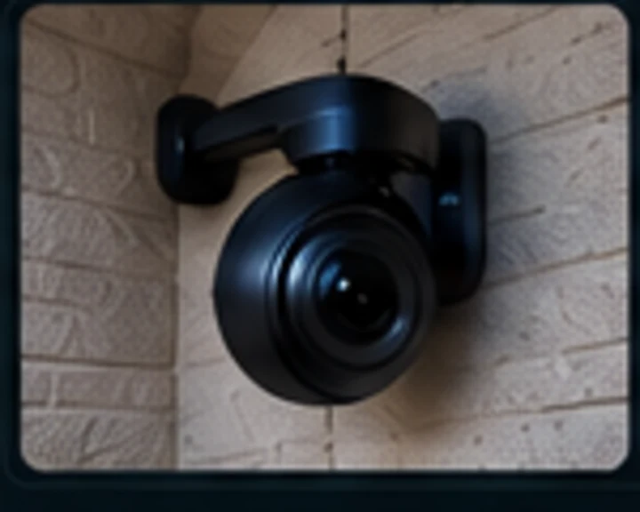
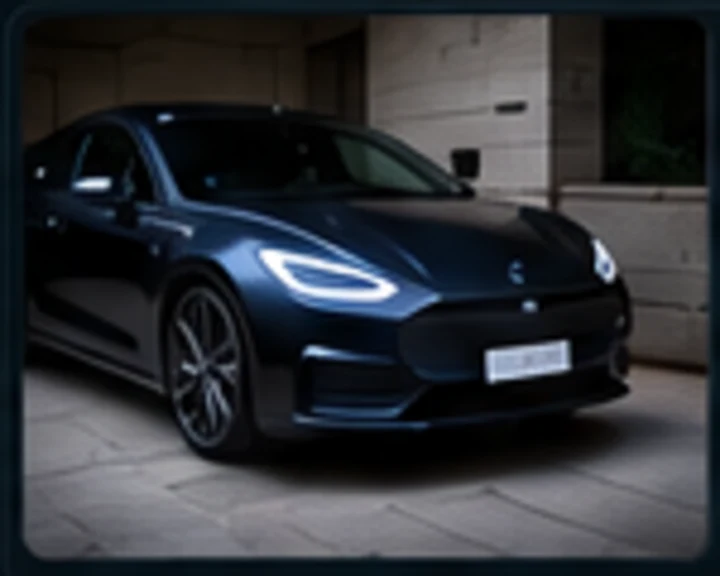

Infrastructure • Security • Automation
REYES
IT Systems & Infrastructure Administrator
I design, secure, automate, and maintain reliable infrastructure across networking, virtualization, containers, monitoring, storage, and cloud-connected systems.
Public-safe portfolio: internal addresses, credentials, and sensitive topology details are intentionally omitted.
About
Infrastructure work that is designed to survive real change.
I use the Pickford Homelab as a production-minded environment for testing infrastructure patterns, documenting change, troubleshooting failure modes, and validating recovery. The goal is not simply to run services — it is to operate them with discipline.
My approach is read-only first, backup before mutation, one meaningful change at a time, explicit validation after change, and documentation that makes the next maintenance window easier than the last.
Pickford Homelab
A segmented, observable, self-hosted infrastructure lab.
Click any component to see how it fits into the environment. The diagram is intentionally abstracted for public viewing.
Featured Projects
Case studies that show how I operate infrastructure.
Each project is framed around the problem, the controlled change, and the validation that proved the result.

Storage • Linux • Data Integrity
Frigate Storage Migration & Cleanup
Migrated camera media to a dedicated disk, traced a Docker mount-namespace edge case, verified disk health, and removed only exact duplicate legacy media while preserving unique recordings.

PostgreSQL • Backup • Validation
TeslaMate PostgreSQL Repair
Diagnosed a database collation mismatch, created and verified a logical backup, rebuilt indexes, refreshed the collation version, and confirmed application health after maintenance.
pfSense • IDS/IPS • VLAN • DNS
Network Security Architecture
Designed a segmented network with policy boundaries, DNS controls, IDS/IPS monitoring, and secure remote access while keeping management paths separate from less-trusted devices.
Monitoring • Automation • Change Control
Operational Validation Framework
Built repeatable health checks and a Git-backed session workflow to validate infrastructure changes, document outcomes, and reduce guesswork during troubleshooting.
Technologies & Skills
Tools are useful. How they are operated matters more.
Click a technology to see how it is used in the Pickford environment.
Homelab Gallery
Infrastructure should be understandable at a glance.
Representative visuals inspired by the Pickford environment. Click any image to enlarge it.
Operating Method
Change with evidence, not hope.
A practical workflow for infrastructure work where rollback and verification are part of the plan, not an afterthought.
Observe first
Collect bounded, read-only evidence before changing configuration.
Protect state
Verify backups, rollback paths, and maintenance boundaries before mutation.
Change narrowly
Make one meaningful change at a time with stop-on-failure guards.
Validate broadly
Check the target service, dependencies, and the wider environment after maintenance.
Document the result
Record what changed, what was verified, and what remains intentionally deferred.
Contact
Let’s talk infrastructure.
I’m interested in systems, infrastructure, networking, security, automation, and practical operations.